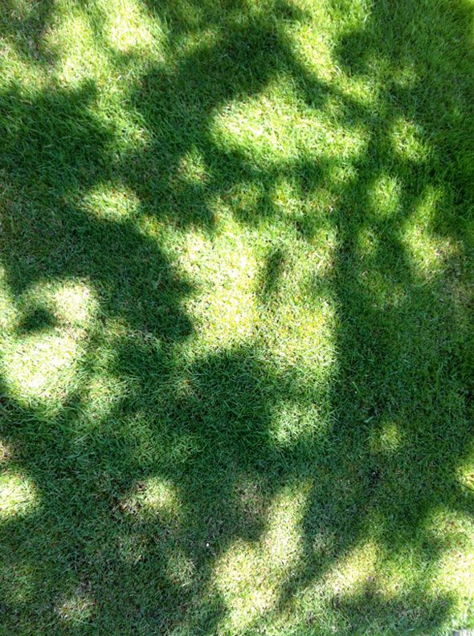
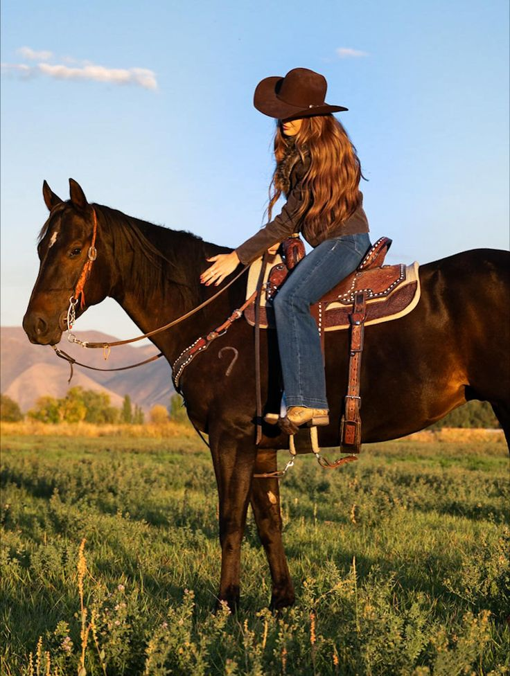
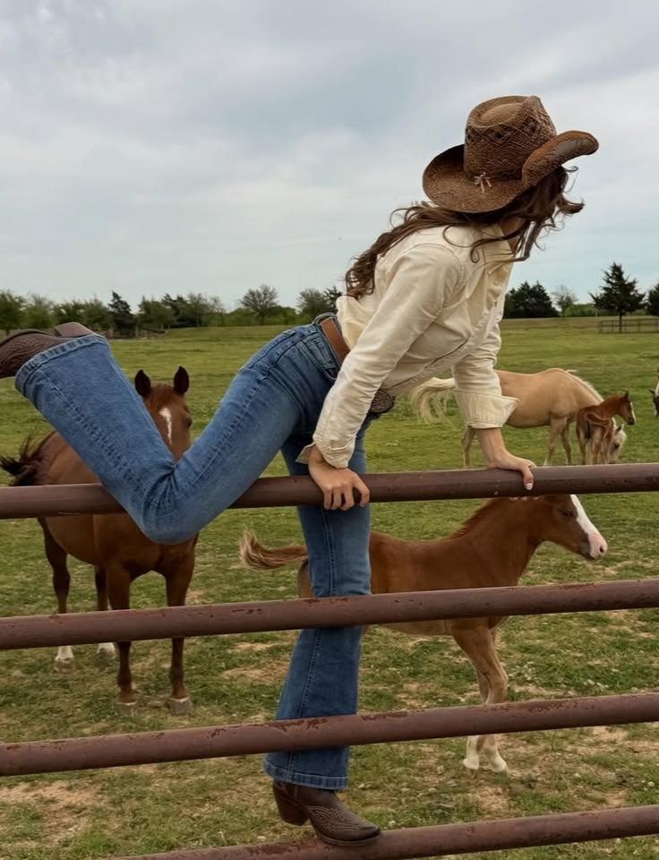
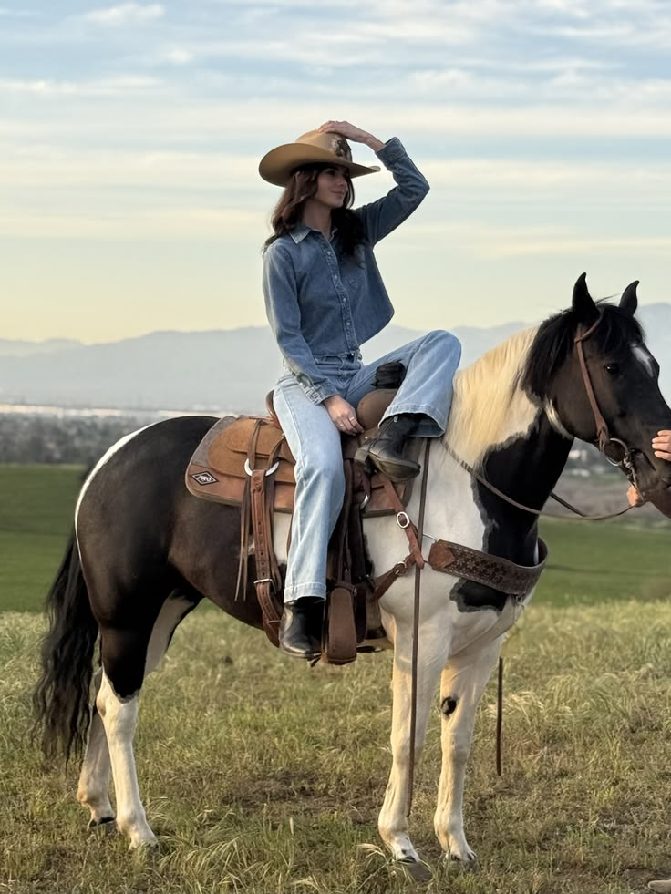

Hola, me llamo Luizabeth Contreras, estudiante de tercer año. Mi pasión por la creación me llevó a construir esta web para mostrar mis habilidades y lo que me gustaría ser de adulta.
Mis fortalezas son lo que me hacen ser una gran persona. Soy...
Mis habilidades definen mis capacidades.
Mis debilidades...
| Plazo | Mis Objetivos |
|---|---|
|
🎯
Corto Plazo
|
Mis metas a corto plazo son pocas pero duras... |
|
🌍
Largo Plazo
|
Mis metas a largo plazo para construir mi futuro... |
Toca el texto para descubrirlo

¡Toca las tarjetas o los limones cayendo para exprimir y revelar! 🍋



En un futuro me veo trabajando en muchas cosas. Me gustaría trabajar como abogada mercantil desde la comodidad de mi casa, siendo Ingeniera Agrónoma en mi propia finca exportando ganado, maíz, quesos, carne y vivir prósperamente en la naturaleza.
Pasa el ratón (o toca) los artistas para reproducir su música 🎵
Silencio

Es mi marca personal donde ofrezco soluciones digitales y creativas hechas a la medida. Me dedico con pasión al desarrollo y diseño de múltiples servicios de alta calidad.
¡Escríbeme para dar vida a tus proyectos!
Pequeños fragmentos visuales e ideas que guían mi proyecto de vida ✨


La edad no es ningún límite

Sigue tu camino lento, a paso de tortuga, tu vida ira al maximo

Hay que ser dulces con uno mismo

El mar no tiene prisa, pero siempre llega

la gente que se escuza con la vergunza simplemente no tiene ganas

El horizonte nos recuerda que siempre hay un nuevo mañana esperando por nosotros